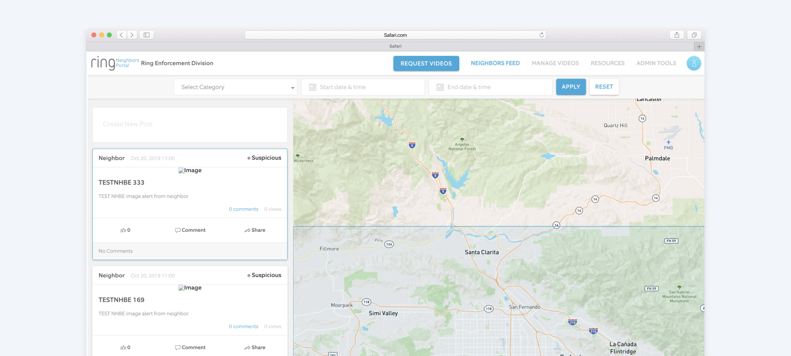
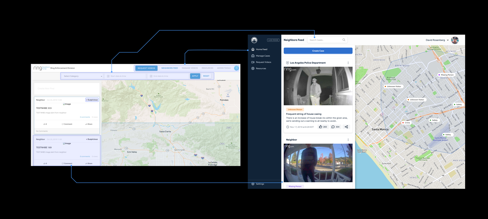
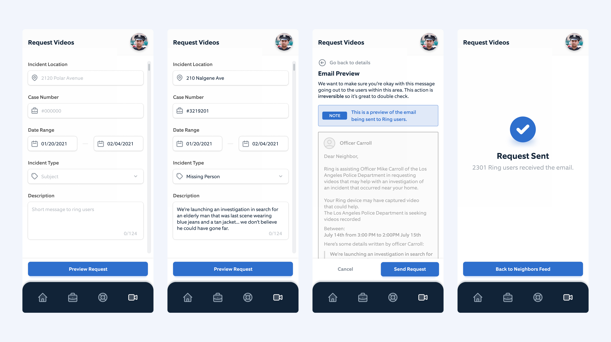
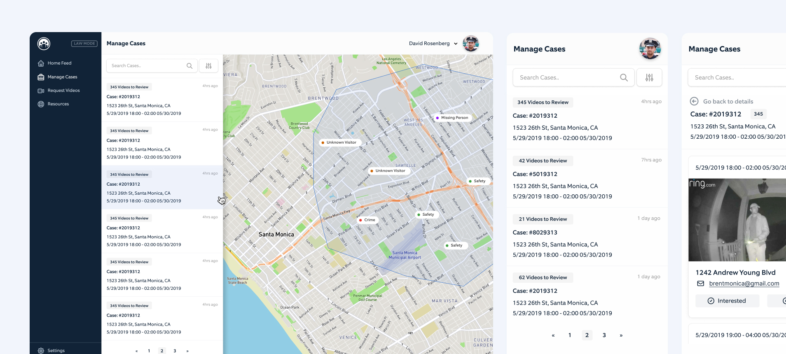
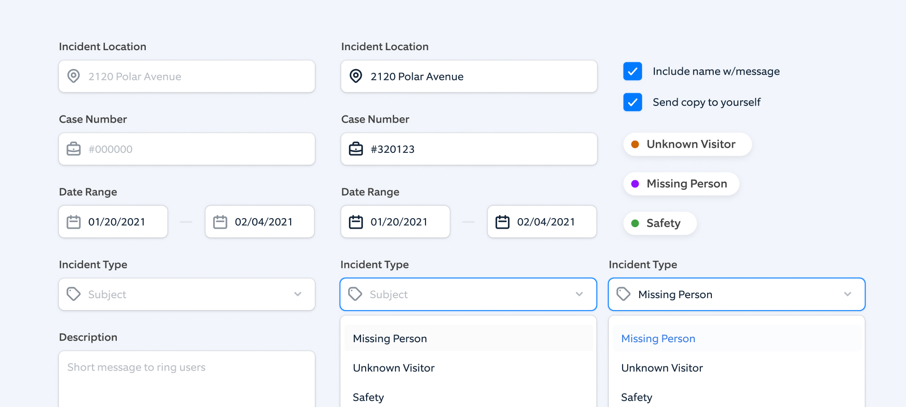

A web application that works alongside Ring’s products to allow law enforcement to play a crucial part in neighborhood safety and investigations. I worked on the end to end product design process during this project.
Overview
After leaving the Ring marketing team I dived into product design for this silo’d project for the Neighbors Team.
The main goal of this project was to allow law enforcement to work alongside users who want to help with investigations if their devices caught activity relating to the incident.
Before I came onto the team there wasn’t many efforts to build a scalable solution so there came numerous challenges to fix the product.
Before design.
Product when I first joined the team.
Old manage cases page.
Old admin user page.
So where did we start?
The first step we took we analyzing what were the main actions of the user within the product. Which narrowed down to reviewing videos, sending request, and browsing the neighbors feed. With that in mind the optimization of where the user lands at the start of the experience had to be changed.. since at first glance it’s confusing on what to do.
Upgrading the components.
Taking the components into pieces and finding the best approach.
had to make sure these components could translate to mobile.
What you see above are visuals of the updated neighbors feed, which is the homepage of the application. At this view the product now aligns with the neighbors application that is on mobile devices and many users are familar with (this later being the framework to that web app).
Creating out a mobile iteration was our first line of user testing, which for mobile was crucial to moving forward.
A bit on the components
One of the directions I wanted to head in was bringing in a level of modern UX patterns that we see within most web applications.
Ring hasn’t built too many web applications so much of the headspace was always around mobile and never taking advantage of the space desktop can bring.
Requesting Videos
Requesting videos was one of the value points for law enforcement with this product. What you see going on here is, the investigations officer is inputting a given area that they want a message to be sent to all of the ring users in the area. The device owner will then get that message and have the choice to share or not share. If the device owner shares then the officer gets the media.
Manage Cases
These are the visuals for an officer that has several cases and within those have various videos to review. Within the case view they can play and mark if the material is critical or non critical.
Design system chats?
Being the only designer on the team at the time, while building out components I would document and componentize them within Figma.
The design system was never finished but provided the framework for the next designer that joined to continue building out.
Design systems work
During my time I kick started the creation of a design system for neighbors web, the work I created for the public safety portal eventually spread to the neighbors web application.
In Retrospective
The neighbors public safety portal was my first ever product design job, and it came with several challenges. Such as being the only designer on the team, learning the ropes of cross team communication, and making a push for design values that the team didn't notice at the time.
I owe the team for providing an area for massive growth, that I took into various projects in the future.